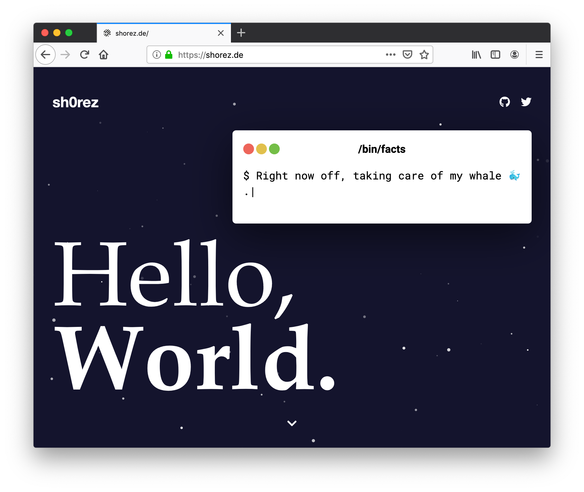
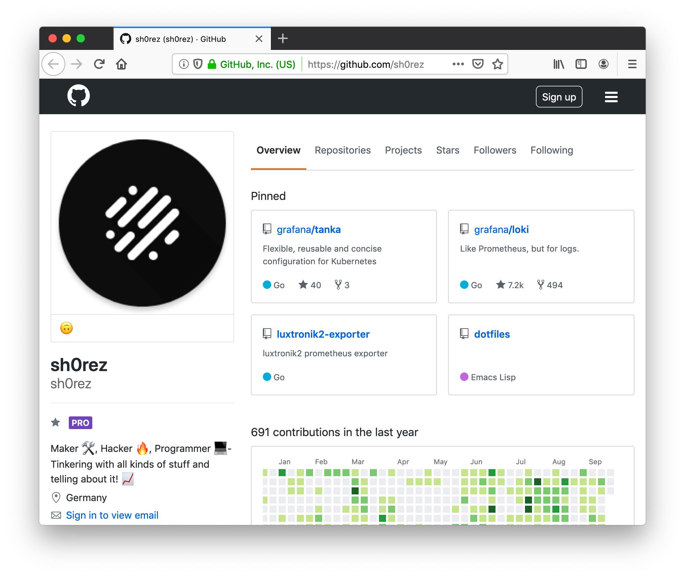

Links
Homepage
Persönliche Portfolioseite, erstellt mit modernen Webtechnologien. Als Framework kam ReactJS zum Einsatz, gepaart mit GatsbyJS zur leichteren Anwendung.
ES6, JSX und CSS-in-JS erlauben eine hochperformante, abstrahierte und klare Codebasis. Durch Webpack werden alle Abhängigkeiten schließlich gebündelt und der Anwendungscode als Service Worker verpackt, sodass die Website nach anfänglicher Ladezeit kaum weitere Anfragen an den Server senden muss und sogar offline ausgeführt werden kann.
- Gatsby
- React
- SSR
- Responsive
GitHub
GitHub ist die größte Plattform der Welt für quelloffene Software und bietet Werkzeuge für Communities zum gemeinsamen Entwicklen von Software.
- Open Source
- Git
- Version Control